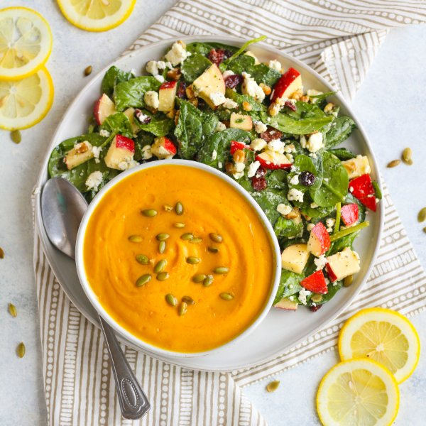

Butternut Squash Soup with Spinach Salad & Lemon Poppy Seed Dressing

Total Time
35 min
Nutrition (per serving)
704.7 kcalCalories
22.3 gProtein
78.1 gCarbs
39.8 gFat
Full nutrition table
| Calories | 704.7 kcal |
| Total fat | 39.8 g |
| Saturated fat | 10.1 g |
| Trans fat | 0.5 g |
| Cholesterol | 31.2 mg |
| Sodium | 491.9 mg |
| Carbohydrates | 78.1 g |
| Fiber | 15.8 g |
| Sugars | 36.8 g |
| Protein | 22.3 g |
| Potassium | 1922 mg |
| Calcium | 438 mg |
| Iron | 6 mg |
| Vitamin A | 322.1 IU |
| Vitamin C | 76 mg |
| Vitamin D | 35.6 IU |
Cookware
Ingredients
- 2 (5 oz) pkgsbaby spinach
- 2 smallbutternut squash
- 2 mediumcarrots
- 48 fl ozchicken or vegetable broth
- 1 (4 oz) pkgcrumbled feta cheese
- ½ cupdried cranberries
- 2Gala apples
- 2 (1 inch) piecesginger root
- 2lemons
- ¼ cuppumpkin seeds
- ¼ cupwalnuts
- 8 fl ozwhole milk
- 2 mediumyellow onions
- cinnamon, ground
- curry powder
- Dijon mustard
- extra virgin olive oil
- honey
- onion powder
- poppy seeds
- salt
Steps
- Wash and dry the fresh produce. (Skip the spinach if it came pre-washed.)2 medium carrots
2 (1 inch) pieces ginger root
2 small butternut squash
2 lemons
2 Gala apples
2 (5 oz) pkgs baby spinach - Peel and small dice the carrots. Peel and small dice the onions. Peel and mince or grate the ginger.2 medium yellow onions
- Preheat a large pot over medium heat.
- Once the pot is hot, add oil and swirl to coat the bottom.2 tbsp extra virgin olive oil
- Add the carrots, onions, and ginger to the pot. Cook, stirring occasionally, until the veggies are tender, 5-6 minutes.
- Meanwhile, trim off and discard the ends of each squash. Halve squashes lengthwise and scrape out the seeds; peel and small dice the squash. You should have about 8 cups of diced squash.
- Add the squash, broth, and spices to the pot. Bring to a boil over high heat, then reduce to a simmer and cook until squash is fork-tender, 10-15 minutes.48 fl oz (6 cups) chicken or vegetable broth
1 tsp cinnamon
1 tsp curry powder
1 tsp salt - Juice half of the lemons into a large bowl; add the oil, honey, Dijon, onion powder, and poppy seeds. Whisk to combine the dressing.¼ cup extra virgin olive oil
2 tsp honey
½ tsp Dijon mustard
½ tsp onion powder
½ tsp poppy seeds - Core and medium dice apples.
- Roughly chop walnuts.¼ cup walnuts
- Add the spinach, feta, walnuts, cranberries, and apples to the bowl with the dressing. Toss to combine and set aside.1 (4 oz) pkg crumbled feta cheese
½ cup dried cranberries - Once the squash is tender, juice remaining lemon into the pot. Add the milk. Stir to combine and remove from the heat.8 fl oz (1 cup) whole milk
- Pureé the soup with an immersion (hand) blender or regular blender.
- To serve, divide the soup between bowls and top with pumpkin seeds. Serve with the salad and enjoy!¼ cup pumpkin seeds